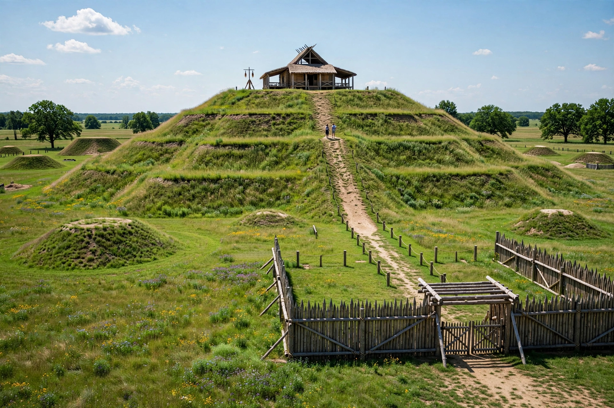

Cahokia

Monks Mound at Cahokia, the largest earthen mound in North America
Cahokia was a pre-Columbian Native American city near the confluence of the Mississippi, Missouri and Illinois rivers, across from modern St. Louis, and the centre of the Mississippian culture. Founded around AD 1050 in a sudden urban florescence, it grew to perhaps 10,000–20,000 inhabitants — larger than contemporary London — with some 120 earthen mounds, including Monks Mound, the largest earthen structure in the Americas, a great timber-circle calendar ('Woodhenge'), plazas and palisades. By 1350 it was abandoned, for reasons still debated, two centuries before Europeans reached the interior.
The city
Cahokia's 'big bang' around 1050 saw a planned city laid out on a cosmological grid: Monks Mound (30 metres high, its base larger than Egypt's Great Pyramid) fronted a 19-hectare Grand Plaza, surrounded by suburbs and farmsteads for miles. Mound 72 contained elite burials: a ruler laid on a cape of 20,000 shell beads in the shape of a falcon, accompanied by mass graves including 53 young women — retainer sacrifice on a scale unmatched elsewhere in North America. Cahokia's influence, goods and imagery (the Southeastern Ceremonial Complex) reached from Wisconsin to the Gulf.
Decline and legacy
From about 1200 the city shrank — environmental strain (deforestation, flooding), climate cooling, political fragmentation and warfare (a great palisade was repeatedly rebuilt) are all implicated; by 1350 the site was empty, and its builders' descendants are debated among the Dhegiha Siouan and other peoples. The mounds were mapped by early American settlers (the name Cahokia comes from a later, unrelated Illiniwek group living nearby in French colonial times) and preserved since 1982 as a UNESCO World Heritage Site.